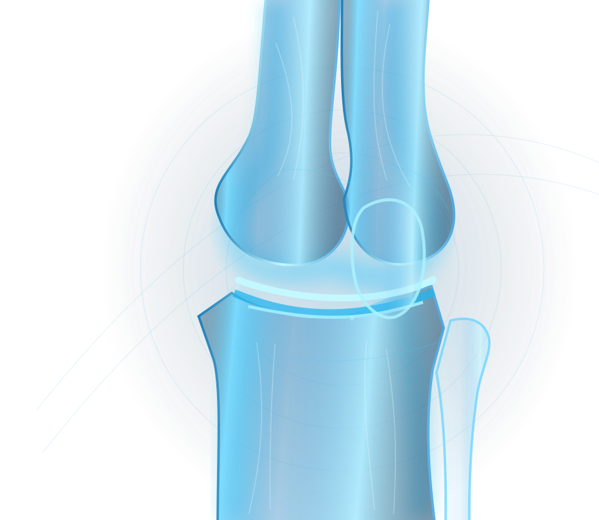

01
Avaliação criteriosa
Nem toda dor exige artroscopia.
Pequenas incisões, visão ampliada e uma indicação construída para o seu caso.


A artroscopia permite visualizar estruturas internas do joelho com uma câmera e, quando necessário, tratar lesões com instrumentos delicados.
Visão de dentro da articulaçãoDa primeira avaliação ao acompanhamento, o objetivo é tomar decisões fundamentadas.
Nem toda dor exige artroscopia.
Câmera e instrumentos inseridos por pequenas incisões.
Reabilitação ajustada ao procedimento realizado.
A avaliação clínica ajuda a diferenciar causas e definir o cuidado apropriado.
Conversar com a equipe ↗Decisões clínicas exigem conversa, planejamento e acompanhamento — não fórmulas prontas.
História clínica, exame físico e imagens quando necessárias.
Discussão dos benefícios, limites e alternativas.
Orientações específicas para a recuperação e fisioterapia.


Informações gerais; a orientação individual depende de consulta.
Não. Muitas causas de dor podem ser tratadas sem cirurgia. A indicação depende da avaliação clínica.
Pode ser ambulatorial em casos selecionados. O tempo de observação depende do procedimento e das condições do paciente.
O prazo varia muito conforme a lesão tratada, o procedimento e a evolução na reabilitação.
Agende uma avaliação e entenda as possibilidades de tratamento para seu joelho.

 Dr. Gabriel Lins Abib e Dr. Ricardo QueirozOrtopedia especializada em joelho
Dr. Gabriel Lins Abib e Dr. Ricardo QueirozOrtopedia especializada em joelho